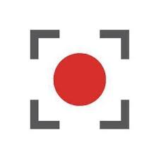
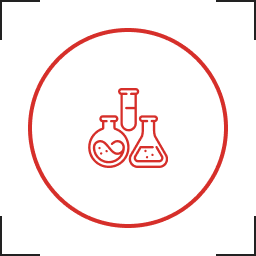
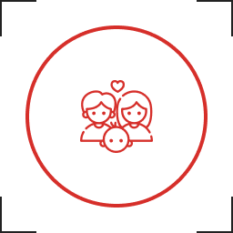

Гемабанк® — биотехнологическая компания

Гемабанк® занимается персональным хранением стволовых клеток и разработкой препаратов для лечения заболеваний крови и иммунной системы. Это всероссийский лицензированный банк персонального хранения клеток пуповинной крови, клеток и ткани пупочного канатика. Компания соответствует требованиям международных стандартов и является лидером российского рынка.
История создания
Созданный в 2003 году, Гемабанк® стал одним из первых в России банков стволовых клеток, предлагающих услугу биострахования новорожденного ребёнка и всей семьи. С тех пор компания постоянно развивает линейку услуг, предлагая клиентам комплексные сервисы, включая сохранение различных видов ценного биоматериала.
Статистика и достижения
- Более 49 000 образцов биоматериалов на долгосрочном персональном хранении (гемопоэтические стволовые клетки пуповинной крови, мезенхимальные стволовые клетки, ткань пупочного канатика).
- 78 успешных трансплантаций с использованием образцов из Гемабанка® в ведущих медицинских центрах РФ, США, Германии, Южной Кореи, Грузии.
- Востребованность биоматериала для лечения составляет 1/550.
- Представительства и логистика в более чем 150 городах России.
- Член Ассоциаций «РУСКОРД» и «НАСБИО».
Структура и принадлежность
Гемабанк® принадлежит компании ПАО «ММЦБ» (Международный Медицинский Центр Обработки и Криохранения Биоматериалов). В свою очередь, ММЦБ является подразделением группы компаний «Артген биотех». Группа компаний Артген имеет холдинговую структуру: материнская компания Артген — стратегический инвестор, эмитент Московской Биржи (тикер ABIO). ПАО «ММЦБ» также является эмитентом Московской Биржи (тикер GEMA).
Ключевые бренды группы: GENETICO®, Репробанк®, Неоваскулген®.
Технологии и лаборатории

Гемабанк® располагает современными лабораторными комплексами по обработке пуповинной крови и специализированными криохранилищами. Уникальная методика выделения стволовых клеток разработана совместно с РОНЦ им. Блохина и запатентована. Компания одной из первых внедрила контроль каждого этапа обработки, что позволяет выделить максимальное количество стволовых клеток из любого образца.
Также доступна услуга сохранения ткани пупочного канатика для выделения мезенхимальных клеток, которые обладают противовоспалительным и иммуномодулирующим действием.
Партнёрство и сотрудничество
Гемабанк® успешно сотрудничает с ведущими трансплантационными центрами России и мира, в том числе:
- Дьюковский университет (Северная Каролина, США)
- Cha Bundang Medical Center (Южная Корея)
- НИИ детской гематологии и трансплантологии им. Р.М. Горбачёвой
- Российская детская клиническая больница (РДКБ)
- РОНЦ им. Блохина
Все трансплантации с применением образцов Гемабанка® прошли успешно, что подтверждает высокое качество хранения.
Руководство и общественная деятельность
Генеральный директор — Иван Викторович Потапов, кандидат медицинских наук, врач-трансфузиолог. Он входит в рабочие группы Ассоциации «РУСКОРД» по разработке единых отраслевых стандартов для банков пуповинной крови и протоколов клинических исследований по лечению ДЦП.
Гемабанк® поддерживает издания: «Клеточная Трансплантология и Тканевая Инженерия» (ныне «Гены и клетки») — рецензируемый научно-практический журнал, рекомендованный ВАК.
Доверие известных людей
Гемабанк® выбирают многие врачи, деятели науки, искусства, культуры и спорта:

- Екатерина Иванчикова (IOWA)
- Оксана Акиньшина, Олеся Судзиловская, Эвелина Бледанс
- Анна Ковальчук, Михаил Черных
- Галина и Алексей Немовы, Дмитрий Скопинцев, Валерий Карпин
- Врачи: Фаткуллин Ильдар Фаридович, Рымашевский Александр Николаевич и другие.